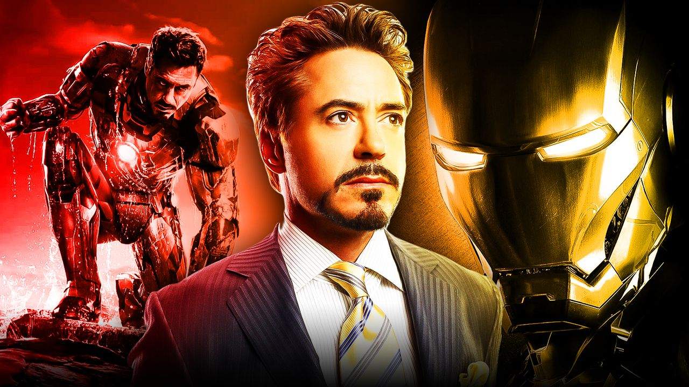
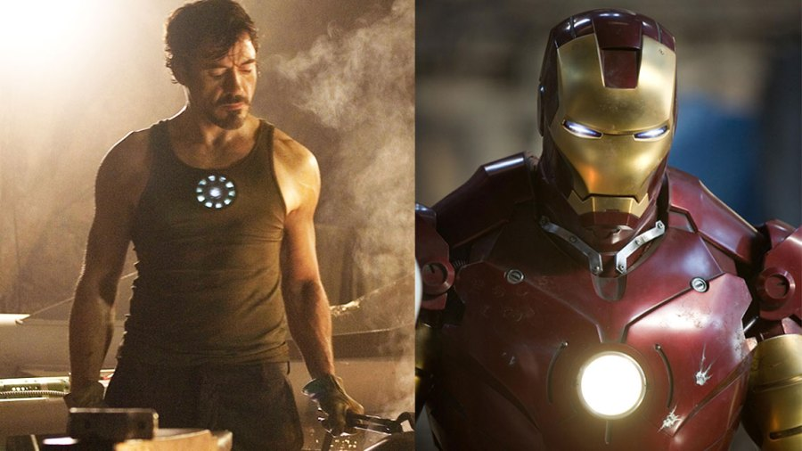

Robert John Downey Jr. (born April 4, 1965)[7] is an American actor and producer. His career has been characterized by critical and popular success in his youth, followed by a period of substance abuse and legal troubles, before a resurgence of commercial success in middle age. In 2008, Downey was named by Time magazine among the 100 most influential people in the world,[8][9] and from 2013 to 2015, he was listed by Forbes as Hollywood's highest-paid actor.[8][10] His films have grossed over $14.4 billion worldwide, making Downey the sixth-highest-grossing box office star of all-time.[11]

At the age of five, he made his acting debut in Robert Downey Sr.'s film Pound in 1970. He subsequently worked with the Brat Pack in the teen films Weird Science (1985) and Less Than Zero (1987). In 1992, Downey portrayed the title character in the biopic Chaplin, for which he was nominated for the Academy Award for Best Actor and won a BAFTA Award. Following a stint at the Corcoran Substance Abuse Treatment Facility on drug charges, he joined the TV series Ally McBeal, for which he won a Golden Globe Award; however in the wake of two drug charges, one in late 2000 and one in early 2001, he was fired and his character terminated. He stayed in a court-ordered drug treatment program shortly after and has maintained his sobriety since 2003.
Initially, bond completion companies would not insure Downey, until Mel Gibson paid the insurance bond for the 2003 film The Singing Detective.[12] He subsequently went on to star in the black comedy Kiss Kiss Bang Bang (2005), the thriller Zodiac (2007), and the action comedy Tropic Thunder (2008); for the latter he was nominated for an Academy Award for Best Supporting Actor. Downey gained global recognition for starring as Tony Stark / Iron Man in ten films within the Marvel Cinematic Universe, beginning with Iron Man (2008). He has also played the title character in Guy Ritchie's Sherlock Holmes (2009), which earned him his second Golden Globe, and its sequel, Sherlock Holmes: A Game of Shadows (2011).
Early life and Family
As a child, Downey was "surrounded by drugs." His father, a drug addict, allowed Downey to use marijuana at age six, an incident which his father later said he regretted.[22] Downey later stated that drug use became an emotional bond between him and his father: "When my dad and I would do drugs together, it was like him trying to express his love for me in the only way he knew how." Eventually, Downey began spending every night abusing alcohol and "making a thousand phone calls in pursuit of drugs."[23][24]
During his childhood, Downey had minor roles in his father's films. He made his acting debut at the age of five, playing a sick puppy in the absurdist comedy Pound (1970), and then at seven appeared in the surrealist Western Greaser's Palace (1972).[19] At the age of 10, he was living in England and studied classical ballet as part of a larger curriculum.[25][26] He attended the Stagedoor Manor Performing Arts Training Center in upstate New York as a teenager. When his parents divorced in 1978, Downey moved to California with his father, but in 1982, he dropped out of Santa Monica High School, and moved back to New York to pursue an acting career full-time.[27]
Career
1983–1995: Beginnings and critical acclaim
Downey began building upon theater roles, including in the short-lived off-Broadway musical American Passion at the Joyce Theater in 1983, produced by Norman Lear. In 1985, he was part of the new, younger cast hired for Saturday Night Live, but following a year of poor ratings and criticism of the new cast's comedic talents, he and most of the new crew were dropped and replaced.[27] Rolling Stone magazine named Downey the worst SNL cast member in its entire run, stating that the "Downey Fail sums up everything that makes SNL great."[29] That same year, Downey had a dramatic acting breakthrough when he played James Spader's character's sidekick in Tuff Turf and then a bully in John Hughes's Weird Science. He was considered for the role of Duckie in John Hughes's film Pretty in Pink (1986),[30] but his first lead role was with Molly Ringwald in The Pick-up Artist (1987). Because of these and other coming-of-age films Downey did during the 1980s, he is sometimes named as a member of the Brat Pack.[27][31]
In 1987, Downey played Julian Wells, a drug-addicted rich boy whose life rapidly spirals out of his control, in the film version of the Bret Easton Ellis novel Less Than Zero. His performance, described by Janet Maslin in The New York Times as "desperately moving",[32] was widely praised, though Downey has said that for him "the role was like the ghost of Christmas Future" since his drug habit resulted in his becoming an "exaggeration of the character" in real life.[5] Zero drove Downey into films with bigger budgets and names, such as Chances Are (1989) with Cybill Shepherd and Ryan O'Neal, Air America (1990) with Mel Gibson, and Soapdish (1991) with Sally Field, Kevin Kline, and Whoopi Goldberg.[33][34][35]
2008–present: Iron Man, blockbuster films and further success
With all of the critical success Downey had experienced throughout his career, he had not appeared in a "blockbuster" film. That changed in 2008 when Downey starred in two critically and commercially successful films, Iron Man and Tropic Thunder. In the article Ben Stiller wrote for Downey's entry in the 2008 edition of The Time 100, he offered an observation on Downey's commercially successful summer at the box office
Yes, Downey is Iron Man, but he really is Actor Man ... In the realm where box office is irrelevant and talent is king, the realm that actually means something, he has always ruled, and finally this summer he gets to have his cake and let us eat him up all the way to the multiplex, where his mastery is in full effect.

In 2007, Downey was cast as the title character in the film Iron Man,[83] with director Jon Favreau explaining the choice by stating: "Downey wasn't the most obvious choice, but he understood what makes the character tick. He found a lot of his own life experience in 'Tony Stark'."[84] Favreau insisted on having Downey as he repeatedly claimed that Downey would be to Iron Man what Johnny Depp is to the Pirates of the Caribbean series: a lead actor who could both elevate the quality of the film and increase the public's interest in it.[49][85][86][87] For the role Downey had to gain more than 20 pounds (9 kilograms) of muscle in five months to look like he "had the power to forge iron".[88]
Iron Man was globally released between April 30 and May 3, 2008, grossing over $585 million worldwide[89] and receiving rave reviews which cited Downey's performance as a highlight of the film.[90][91][92] By October 2008, Downey had agreed to appear as Iron Man in two Iron Man sequels, as part of the Iron Man franchise, as well as The Avengers, featuring the superhero team that Stark joins, based on Marvel's comic book series The Avengers.[93] He first reprised the role in a small appearance as Iron Man's alter ego Tony Stark in the 2008 film The Incredible Hulk, as a part of Marvel Studios' depicting the same Marvel Universe on film by providing continuity among the movies.[94]
Downey returned as Tony Stark in the first of two planned sequels to Iron Man, Iron Man 2, which released in May 2010. Iron Man 2 grossed over $623M worldwide, becoming the 7th highest-grossing film of 2010.[107] Downey's other commercial film release of 2010 was the comedy road film, Due Date. The movie, co-starring Zach Galifianakis, was released in November 2010[108] and grossed over $211M worldwide, making it the 36th highest-grossing movie of 2010.[109] Downey's sole 2011 film credit was the sequel to the 2009 version of Sherlock Holmes, Sherlock Holmes: A Game of Shadows, which opened worldwide on December 16, 2011.[110]